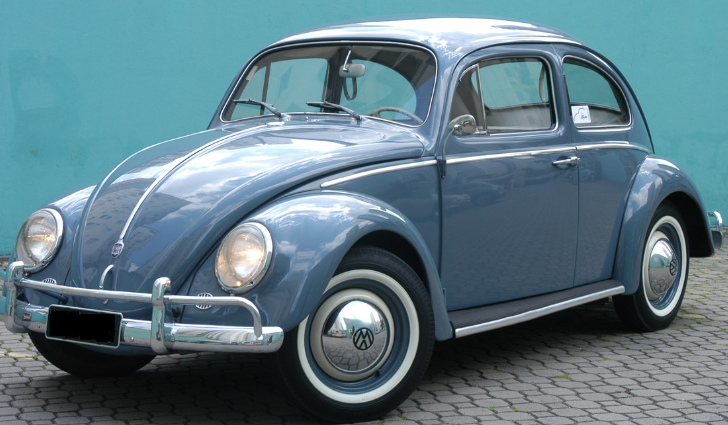
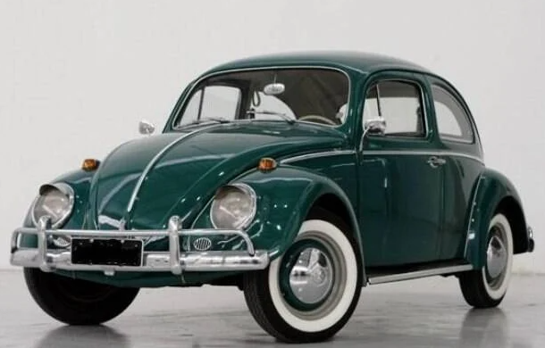
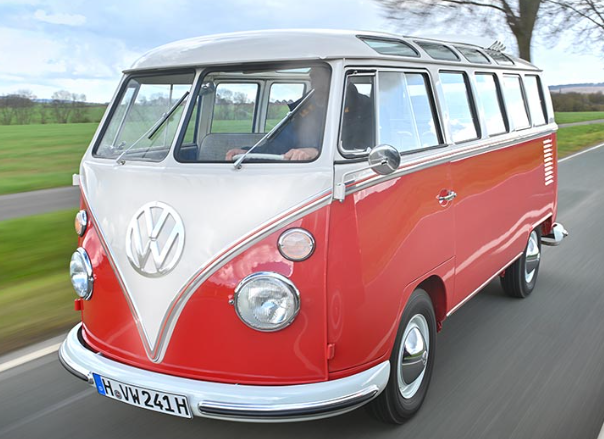

|
O Fusca é um clássico carro compacto que evoca nostalgia e simplicidade. Este Fusca em
particular
tem uma elegante tonalidade de azul escuro que reflete a luz de maneira sutil e sofisticada. A
pintura brilha suavemente sob a luz, dando ao carro um aspecto polido e distinto.
Em resumo, este Fusca azul escuro é uma representação impressionante de um ícone automotivo,
combinando elegância e nostalgia em um pacote singular.
|
R$ 120.000,00 |
 |
|
O Fusca verde escuro é uma visão de serenidade e rusticidade. Sua cor profunda evoca uma
sensação de
conexão com a natureza, lembrando folhagens densas e matas tranquilas. As curvas suaves do carro
contrastam com a riqueza da tonalidade verde, proporcionando uma estética marcante. Com um toque
de
nostalgia e uma pitada de frescor, o Fusca verde escuro se destaca como uma escolha distinta e
encantadora.
|
R$ 80.000,00 |
 |
|
A Kombi "corujinha" vermelha é uma verdadeira representante do espírito alegre e aventureiro.
Com
sua pintura vibrante em vermelho, essa Kombi evoca uma energia contagiante, remetendo a dias
ensolarados e viagens cheias de diversão. Suas características linhas curvas e design icônico
lembram uma coruja, daí o apelido carinhoso. A combinação do vermelho brilhante com os detalhes
em
branco cria um contraste cativante, enquanto o espaço interior amplo promete aventuras
memoráveis e
momentos compartilhados. A Kombi "corujinha" vermelha é mais do que um veículo, é um símbolo de
liberdade e alegria.
|
R$ 220.000,00 |
 |